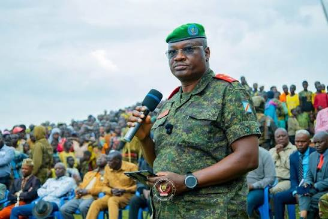

Health and Community Support
Supporting health services and improving access to medical care for communities across Ituri Province.
Welcome to the Government of Ituri Province
Find official information, public services, projects and news from Bunia and across the province.

Birth certificates, marriage certificates, identity documents and other civil registration services.

Health centres, medical services and prevention campaigns for communities across Ituri.

Information about schools, enrolment, education programmes and learning opportunities.

Support for farmers, traders, businesses and economic activities across Ituri Province.
Supporting health services and improving access to medical care for communities across Ituri Province.

Improving road infrastructure to support transportation, connect communities, and facilitate local trade.

Showcasing important public infrastructure in Bunia, including the National Airport of Bunia, which supports transport and connectivity in Ituri Province.

Dear citizens of Ituri,
It is with great pleasure that I welcome you to the official website of the Provincial Government of Ituri. This platform has been created to bring the administration closer to you and to keep you informed about public services, development projects, and activities across the province.
We remain committed to promoting peace, development, and the well-being of every community in Ituri. I invite you to explore this website, stay informed about our activities, and share your suggestions with us.
Together, let us work towards a peaceful and prosperous Ituri.
Major General Gaby Kasongo Mulumba Batoka
Military Governor of Ituri Province

A rapid response team has been deployed to Mambasa and Mandima in Ituri to strengthen the response to the Ebola outbreak and support affected communities.